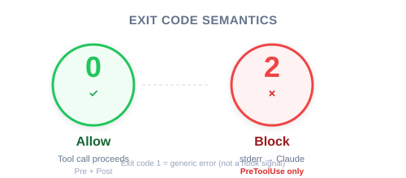

Figure: The four-step process for defining a hook — Event → Matcher → Command → Exit Code.
| Item | Detail |
|---|---|
| Exam Domain | D3 — Claude Code Configuration & Workflows (20%) |
| Task Statements | 3.2 (custom commands & hooks), 1.5 (Agent SDK hooks for tool call interception) |
| Source | claude-code-in-action / 05-hooks / Lesson 15 |
Defining a hook is a four-step process: choose PreToolUse or PostToolUse, select the tool(s) to intercept via a matcher, write a command that reads tool call JSON from stdin, and return an exit code (0 = allow, 2 = block).
In the previous lesson you learned what hooks are. This lesson focuses on how to define one — the four-step mental model that applies whether you are building a simple file guard or a complex compliance gate.
💡 iOS/Swift analogy
Defining a hook is like registering a
URLProtocolsubclass: you declare which requests to intercept (canInit(with:)), write the handling logic, and return a result. The system calls you automatically at the right moment.
Figure: The four-step process for defining a hook — Event → Matcher → Command → Exit Code.
| Decision | PreToolUse | PostToolUse |
|---|---|---|
| When does it run? | Before tool execution | After tool execution |
| Can it block? | Yes (exit code 2) | No (already happened) |
| Analogy | URLProtocol.canInit(with:) — reject before loading |
URLSessionTaskDelegate.didFinishCollecting — inspect after completion |
⚠️ Critical decision point
If your goal is to prevent an action, you must use PreToolUse. A PostToolUse hook cannot undo what already happened — the tool has already executed.
The matcher field uses regex-like syntax to specify which tools trigger the hook:
"matcher": "Read" // single tool
"matcher": "Read|Grep" // multiple tools (OR)
"matcher": ".*" // all tools (wildcard)
Built-in tools you can match against:
| Tool | Purpose |
|---|---|
Read |
Read file contents |
Write |
Create or overwrite files |
Edit |
Modify existing files |
MultiEdit |
Multiple edits in one call |
Bash |
Execute shell commands |
Grep |
Search file contents |
Glob |
Find files by pattern |
WebFetch |
Fetch URL content |
💡 Discovering available tools
Ask Claude directly: "List all tool names you have access to." This is especially useful when MCP servers add custom tools beyond the built-ins.
Your hook command receives a JSON object on standard input:
{
"session_id": "2d6a1e4d-6...",
"transcript_path": "/Users/sg/...",
"hook_event_name": "PreToolUse",
"tool_name": "Read",
"tool_input": {
"file_path": "/code/queries/.env"
}
}
Key fields your command should inspect:
| Field | Purpose |
|---|---|
tool_name |
Which tool Claude is calling |
tool_input |
The arguments Claude passed (file paths, commands, etc.) |
hook_event_name |
Confirms whether this is PreToolUse or PostToolUse |
session_id |
Identifies the current session (useful for logging) |
📝 Implementation note
Your command can be anything executable: a Node.js script, a shell script, a Python script, or even a compiled binary. Claude does not care about the language — only the exit code matters.

| Exit Code | Meaning | Applies To |
|---|---|---|
0 |
Allow — tool call proceeds | PreToolUse and PostToolUse |
2 |
Block — tool call is denied | PreToolUse only |
When exiting with code 2:
- Any text written to stderr is sent to Claude as feedback
- Claude sees the rejection reason and can adjust its behavior
- This creates a feedback loop: block + explain → Claude tries a different approach
⚠️ Exit code 2 is PreToolUse-only
Using exit code 2 in a PostToolUse hook has no blocking effect — the tool has already executed. The exit code is ignored for blocking purposes in PostToolUse.
{
"hooks": {
"PreToolUse": [
{
"matcher": "Read|Grep",
"hooks": [
{
"type": "command",
"command": "node ./hooks/read_hook.js"
}
]
}
]
}
}
This configuration says: "Before Claude calls Read or Grep, run read_hook.js. The script reads the tool call JSON from stdin, decides whether to allow or block, and exits with 0 or 2."
| ❌ Wrong Approach | ✅ Correct Approach | Why |
|---|---|---|
| Use PostToolUse to "prevent" file reads | Use PreToolUse to block before execution | PostToolUse cannot undo a completed read |
| Add "never read .env" to system prompt | Use PreToolUse hook on Read|Grep | Prompt instructions have non-zero failure rate |
Match only Read when guarding file access |
Match Read\|Grep (both can access file contents) |
Grep can also expose file contents |
| Hardcode file paths in the matcher | Use matcher for tool selection, check paths in the command logic | Matcher selects tools, not file paths |
| Forget to handle stderr on exit code 2 | Write clear rejection reason to stderr | Claude needs feedback to understand why the operation was blocked |
On the CCA exam, hook definition questions typically test whether you can:
Core exam philosophies at play:
- Architecture > Prompt — hooks are structural enforcement, not suggestions
- Deterministic > Probabilistic — exit code 2 is a guaranteed block, not a "please don't"
You are building a Claude Code workflow for a team that handles sensitive customer data. The .env file contains API keys and database credentials. You need to ensure Claude can never access its contents through any tool. Which hook configuration is correct?
Read, checking for .env in the file pathRead, checking for .env in the file pathRead|Grep, checking for .env in the file pathYour CI pipeline uses Claude Code to generate documentation. You want to log every Bash command Claude executes for audit purposes, without blocking any operations. Which hook definition is appropriate?
Bash, exit code 0 after loggingBash, exit code 0 after loggingBash, exit code 2 after logging.*, exit code 2 after loggingA research agent uses multiple MCP tools to query different data sources. You need to normalize all date fields returned by these tools to ISO 8601 format. Which hook approach is correct?